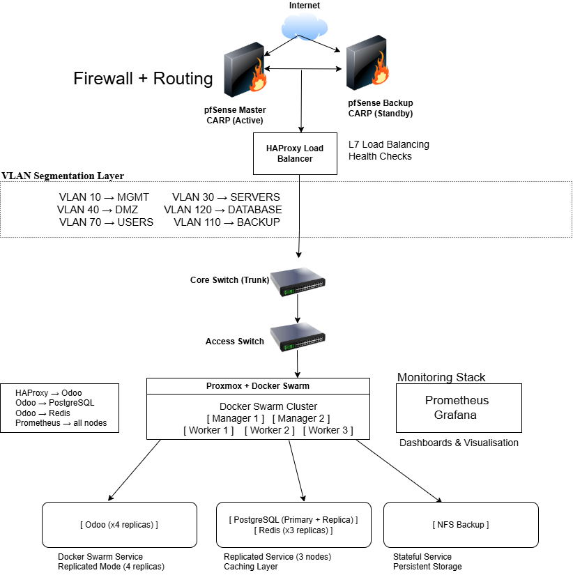

Secure Virtualised Micro Data Centre for Odoo SaaS
High-availability infrastructure designed using Proxmox, Docker Swarm, pfSense, and CI/CD pipelines.

Architecture Overview
- Proxmox Cluster: Virtualised infrastructure hosting all services
- pfSense: Firewall and VLAN routing
- Docker Swarm: Service orchestration
- HAProxy: Load balancing and failover
- PostgreSQL & Redis: Data and caching
- Monitoring: Prometheus & Grafana
Key Features
- High Availability with replicated services
- Network segmentation via VLANs
- CI/CD with GitLab
- Monitoring dashboards
- Backup with NFS
Demo
Add your demo video link here
Technical Deep Dive
- Docker Swarm replication
- HAProxy routing
- PostgreSQL & Redis roles
- VLAN segmentation
Source Code
Add your GitHub link here